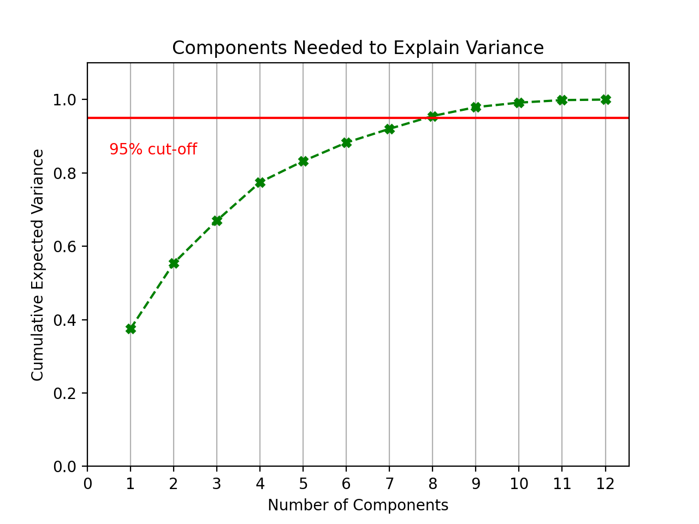
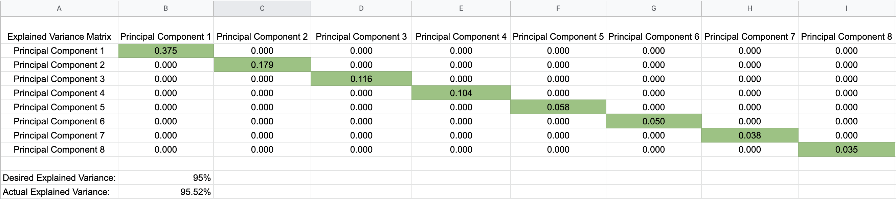

In an era of climate change, wildfires have become a focal point of study - particularly for the West Coast. Trends for recent years have not shown an increase in the total amount of fires, but they have shown an increase in the amount of land burned by these fires. The implications can be severe: deforestation, homelessness, and increased carbon emissions, among others.
While it is unlikely that wildfires are preventable, with appropriate action, the damages done can be reduced. To do this, there needs to be proactive action in conjunction with better indicators for wildfire risk. Our project seeks to identify these variables and create a predictive model to classify the susceptibility of an area to wildfires.
Using a wide variety of data sets that are available publicly by a variety of environmental organizations, we plan to implement a supervised learning predictive model to evaluate future susceptibility levels of counties. We will implement dimensional reduction using PCA to shrink the number of variables in the model, thus simplifying it, while still maintaining effectiveness. Afterwards, we will implement an unsupervised learning model to cluster the susceptibility levels of counties in our study area.
Our evaluation will lead to a label of ranges across the study area depicting the susceptibility levels of wildfires in respective counties. These levels will then be clustered to help identify larger trends among the variety of societal and environmental factors we intend on surveying. Once these larger trends are established, we will look into the primary reason that these regions are overwhelmingly susceptible and attempt to identify appropriate action to reduce these susceptibility index scores in the future.
The goal when running PCA was to reduce the number of inputs while still accurately representing the dataset. In order to maintain the integrity of the data, 95% of the explained variance needed to be accounted for after the reduction took place.
This above graph led to the conclusion that it was possible to safely reduce four dimensions and still maintain the integrity of the data. Below is a matrix showing how each principal component contributed to the total expected variance.
One challenge that this project will have to work around is potential inconsistency in datasets due to the nature of climate science. For example, a measurement as basic as temperature can have a large amount of variance for a location depending on how it is measured. If the measurement occurs in a shady area, over concrete, during a windy period, etc., then that can affect the reading. Additionally, the time range of datasets might prove to be a source of inconsistency. Technology is constantly developing. The instruments used to measure each of the factors that might be considered for wildfires have likely changed in some capacity over time. This will likely further contribute to a lack of precision for any datasets used. While there may be obstacles present, the potential outcome is meaningful: having a means to predict wildfire impact can save property, the climate, and ultimately, lives.
Chas-Amil, Maria Luisa; Touza, Julia M.; Prestemon, Jeffrey P.; McClean, Colin J. 2012. Natural and social factors influencing forest fire occurrence at a local spatial scale. In: Spano, Donatella; Bacciu, Valentina; Salis, Michele; Sirca, Costatino (eds.). Modelling Fire Behavior and Risk. Global Fire Monitoring Center: Freiburg, Germany, 181-186.
Climate at a glance. (2021, February). Retrieved March 01, 2021, from https://www.ncdc.noaa.gov/cag/county/mapping.
Wildfire Statistics. (2021, January 04). Retrieved March 01, 2021, from https://crsreports.congress.gov/.